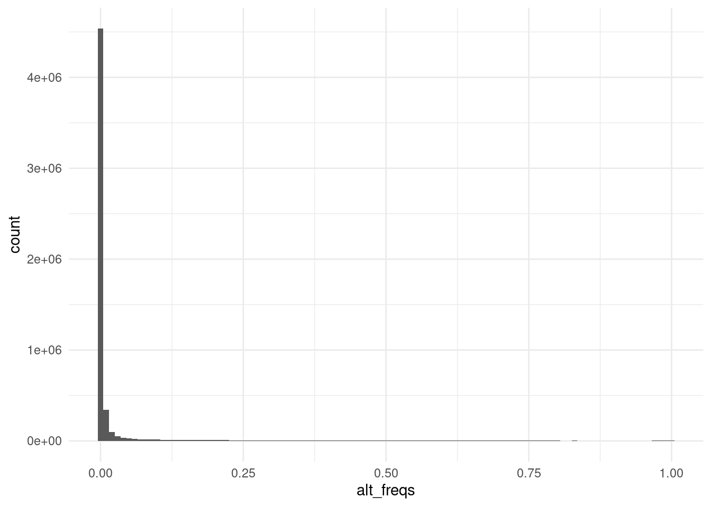
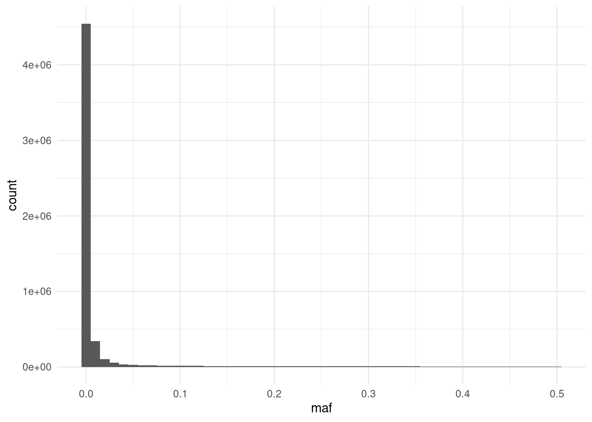
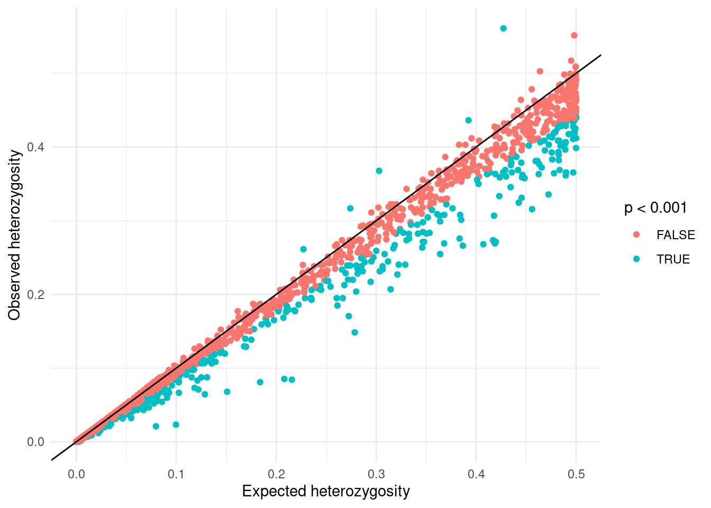
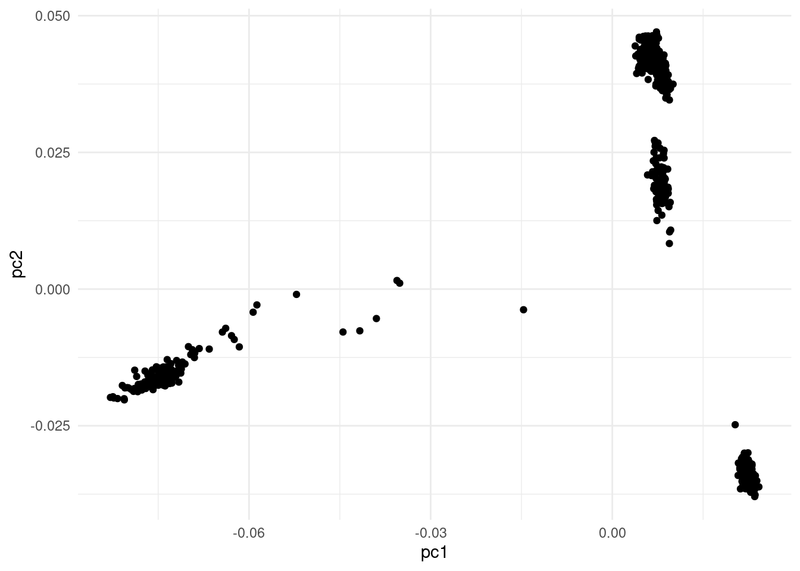
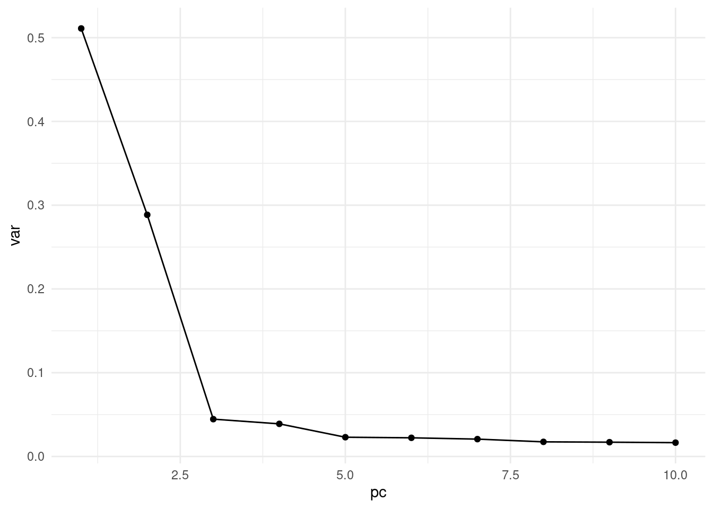
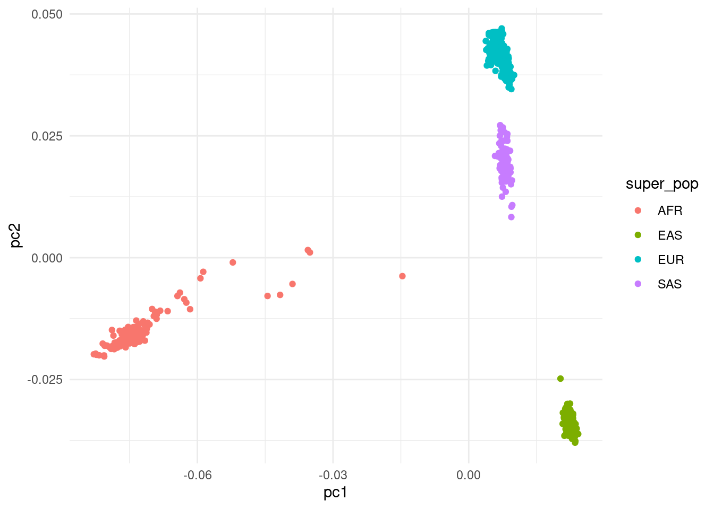

# load the libraries
library(tidyverse) # data manipulation
library(patchwork) # to compose plots
library(janitor) # to clean column names
theme_set(theme_minimal())3 Quality control
Learning objectives
- Become familiar with the PLINK software and its file formats.
- Use PLINIK for quality control of genotype data.
- Identify population structure confounders.
3.1 Example data
We will use simulated traits, based on real GWAS results on continuous and binary traits:
- Binary trait: type 2 diabetes , study accession GCST006801.
- Binary trait: chronotype (“morning person”), study accession GCST007565.
- Continuous trait: caffeine consumption (“mg/day”), study accession GCST001032.
- Continuous trait: blood pressure (mm Hg) study accession GCST001235
The genotype data we are using is from the 1000 Genomes project, specifically the 30x data from Byrska-Bishop et al. (2022).
We have down-sampled the SNVs, to retain ~6M out of the ~70M available.
3.2 Working with plink
The PLINK software provides many utilities to work with genotype data. The most common input file formats used by PLINK, which are also supported by other related GWAS analysis tools are the BED/BIM/FAM trio of files:
TODO: briefly explain the formats
3.2.1 Running plink
PLINK has many functions available, but we will start with a simple one that calculates the minor allele frequency for each of our variants:
plink2 --pfile data/plink/1000G_subset --out results/1000G_subset --freqYou can see the structure of the command is:
plink: the name of the program.--pfile: input file name prefix. PLINK will then look for files with.pgen,.psamand.pvarextensions that all share the prefix specified here.--freq: option to calculate allele frequencies, detailed in the documentation.--out: output file name prefix. PLINK will generate all the output files with this common prefix and a file extension specific to each command. In this example we only get an allele frequency file (detailed below). You can omit this option, in which case PLINK will output the files to the same directory as specified with--pfile. However, it’s good practice to keep our results files separate from the original raw data.
Most PLINK analysis options output their results to a file with an extension that is specific to that option. In the example of the --freq option, it outputs a file with .afreq extension. This is detailed in detailed in the documentation of each option.
These files are standard text files with tab-separated values (TSV), and therefore can be read and analysed in R or Python. For example, below we read the .afreq file produced by the previous command and make a histogram of allele frequencies in our population.
# read the allele frequency file
afreq <- read_tsv("results/1000G_subset.afreq") |>
# PLINK's column names are always upppercase
# this makes them lowercase, easier to type
clean_names()
# inspect the file
head(afreq)# A tibble: 6 × 6
number_chrom id ref alt alt_freqs obs_ct
<dbl> <chr> <chr> <chr> <dbl> <dbl>
1 1 . G A 0.0775 1806
2 1 . A G 0.315 1806
3 1 . A T 0.00332 1806
4 1 . T G 0 1806
5 1 . C G 0.00443 1806
6 1 . G A 0.119 1806# plot a histogram of reference allele frequencies
afreq |>
ggplot(aes(alt_freqs)) +
geom_histogram(binwidth = 0.01)
# add a column of minor allele frequency
afreq <- afreq |>
mutate(maf = ifelse(alt_freqs > 0.5, 1 - alt_freqs, alt_freqs))
# MAF histogram
afreq |>
ggplot(aes(maf)) +
geom_histogram(binwidth = 0.01)
# summary quantiles
summary(afreq$maf) Min. 1st Qu. Median Mean 3rd Qu. Max.
0.0000000 0.0000000 0.0005537 0.0219653 0.0022148 0.5000000 We can see many SNPs have very low frequency. In fact, some of them are not variable at all in our population of samples! We can quickly tabulate how many SNPs are above the commonly-used 1% threshold of allele frequency:
table(afreq$alt_freqs > 0.01)
FALSE TRUE
4772395 806181 It seems like we will have to do some filtering before proceesing with our analysis…
3.3 Hardy–Weinberg
Another quality control step is to check whether SNPs significantly deviate from Hardy-Weinberg equilibrium, which is expected if individuals mate randomly.
plink2 --pfile data/plink/1000G_subset --out results/1000G_subset --maf 0.01 --hardyThis outputs a file with .hardy extension, which we can read into R:
hardy <- read_tsv("results/1000G_subset.hardy") |>
clean_names()
hardy |>
# randomply sample SNPs to avoid plots crashing
sample_n(10e3) |>
ggplot(aes(e_het_a1, o_het_a1)) +
geom_point(aes(colour = p < 0.001)) +
geom_abline() +
labs(x = "Expected heterozygosity", y = "Observed heterozygosity")
From this plot we can see that there seems to be an excess of SNPs with lower heterozygosity than expected, compared to those with higher heterozygosity. This is because of population structure: our samples do not come from a homogenous randomly mating population.
TODO: explain Wahlund effect and maybe make some ternary plots with HWTernaryPlot.
Tip: Running multiple options at once
We have seen 3 PLINK commands that are useful for checking properties of our genotype data:
--freqto assess the allele frequency across SNPs.--missingto assess genotype missingness both across SNPs and samples.--hardyto assess genotype frequency deviations from the Hardy-Weinberg equilibrium expectation.
So far, we have run each of these options individually, however you can run multiple options simultaneously. For example, our previous analyses could have been run with a single command:
plink2 --pfile data/plink/1000G_subset --out results/1000G_subset --freq --hardy --missingThis would produce all three respective results files in one go.
3.4 Population structure
Based on our previous exploratory analysis, we apply two filters in this analysis:
- Minor allele frequency above 1%.
- Hardy-Weinberg equilibrium p-value above 0.001.
plink2 --pfile data/plink/1000G_subset --out results/1000G_subset \
--maf 0.01 --hwe 0.001 keep-fewhet --pcaeigenvec <- read_tsv("results/1000G_subset.eigenvec") |>
clean_names()
eigenvec |>
ggplot(aes(pc1, pc2)) +
geom_point()
eigenval <- read_tsv("results/1000G_subset.eigenval",
col_names = "eigenval")
eigenval <- eigenval |>
mutate(pc = 1:n(),
var = eigenval/sum(eigenval))
eigenval |>
ggplot(aes(pc, var)) +
geom_point() +
geom_line()
sample_info <- read_tsv("data/sample_info.tsv")
eigenvec |>
left_join(sample_info, by = c("iid" = "individual_id")) |>
ggplot(aes(pc1, pc2, colour = super_pop)) +
geom_point()
3.5 Summary
Key Points
- TODO